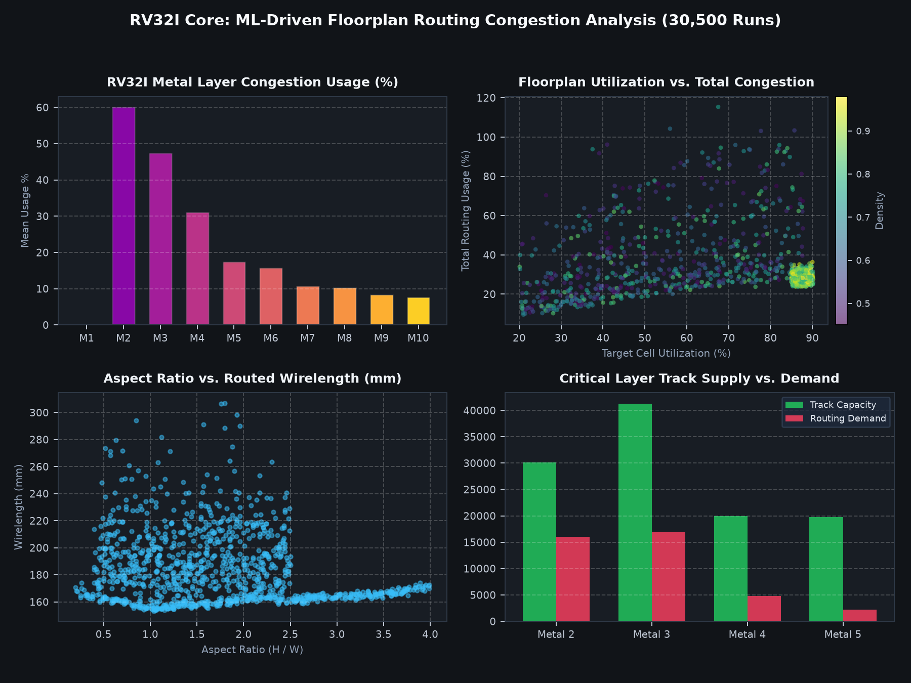

↗
ML-Based Routing & Congestion Predictor for RV32I Processor
VLSI DesignML for EDACadenceOpenROADGradient Boosting
Developing an end-to-end machine learning model to predict routing congestion in an RV32I RISC-V processor during RTL-to-GDSII physical implementation. Analyzes a custom 30,500+ row dataset extracted from Cadence sweeps, detecting congestion hotspots early and recommending parameter adjustments before routing failure.